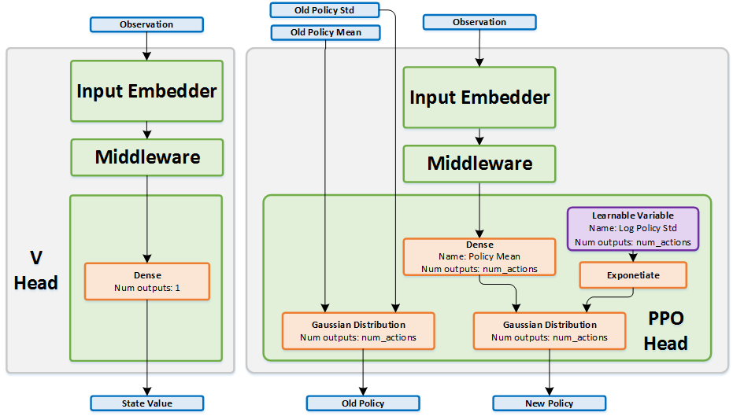

<!DOCTYPE html>
<!--[if IE 8]><html class="no-js lt-ie9" lang="en" > <![endif]-->
<!--[if gt IE 8]><!--> <html class="no-js" lang="en" > <!--<![endif]-->
<head>
  <meta charset="utf-8">
  
  <meta name="viewport" content="width=device-width, initial-scale=1.0">
  
  <title>Proximal Policy Optimization &mdash; Reinforcement Learning Coach 0.11.0 documentation</title>
  

  
  
  
  

  

  
  
    

  

  <link rel="stylesheet" href="../../../_static/css/theme.css" type="text/css" />
  <link rel="stylesheet" href="../../../_static/pygments.css" type="text/css" />
  <link rel="stylesheet" href="../../../_static/css/custom.css" type="text/css" />
    <link rel="index" title="Index" href="../../../genindex.html" />
    <link rel="search" title="Search" href="../../../search.html" />
    <link rel="next" title="Rainbow" href="../value_optimization/rainbow.html" />
    <link rel="prev" title="Policy Gradient" href="pg.html" />
    <link href="../../../_static/css/custom.css" rel="stylesheet" type="text/css">


  
  <script src="../../../_static/js/modernizr.min.js"></script>

</head>

<body class="wy-body-for-nav">

   
  <div class="wy-grid-for-nav">

    
    <nav data-toggle="wy-nav-shift" class="wy-nav-side">
      <div class="wy-side-scroll">
        <div class="wy-side-nav-search">
          

          
            <a href="../../../index.html" class="icon icon-home"> Reinforcement Learning Coach
          

          
            
            
          
          </a>

          
            
            
          

          
<div role="search">
  <form id="rtd-search-form" class="wy-form" action="../../../search.html" method="get">
    <input type="text" name="q" placeholder="Search docs" />
    <input type="hidden" name="check_keywords" value="yes" />
    <input type="hidden" name="area" value="default" />
  </form>
</div>

          
        </div>

        <div class="wy-menu wy-menu-vertical" data-spy="affix" role="navigation" aria-label="main navigation">
          
            
            
              
            
            
              <p class="caption"><span class="caption-text">Intro</span></p>
<ul>
<li class="toctree-l1"><a class="reference internal" href="../../../usage.html">Usage</a></li>
<li class="toctree-l1"><a class="reference internal" href="../../../dist_usage.html">Usage - Distributed Coach</a></li>
<li class="toctree-l1"><a class="reference internal" href="../../../features/index.html">Features</a></li>
<li class="toctree-l1"><a class="reference internal" href="../../../selecting_an_algorithm.html">Selecting an Algorithm</a></li>
<li class="toctree-l1"><a class="reference internal" href="../../../dashboard.html">Coach Dashboard</a></li>
</ul>
<p class="caption"><span class="caption-text">Design</span></p>
<ul>
<li class="toctree-l1"><a class="reference internal" href="../../../design/control_flow.html">Control Flow</a></li>
<li class="toctree-l1"><a class="reference internal" href="../../../design/network.html">Network Design</a></li>
<li class="toctree-l1"><a class="reference internal" href="../../../design/horizontal_scaling.html">Distributed Coach - Horizontal Scale-Out</a></li>
</ul>
<p class="caption"><span class="caption-text">Contributing</span></p>
<ul>
<li class="toctree-l1"><a class="reference internal" href="../../../contributing/add_agent.html">Adding a New Agent</a></li>
<li class="toctree-l1"><a class="reference internal" href="../../../contributing/add_env.html">Adding a New Environment</a></li>
</ul>
<p class="caption"><span class="caption-text">Components</span></p>
<ul class="current">
<li class="toctree-l1 current"><a class="reference internal" href="../index.html">Agents</a><ul class="current">
<li class="toctree-l2"><a class="reference internal" href="ac.html">Actor-Critic</a></li>
<li class="toctree-l2"><a class="reference internal" href="../imitation/bc.html">Behavioral Cloning</a></li>
<li class="toctree-l2"><a class="reference internal" href="../value_optimization/bs_dqn.html">Bootstrapped DQN</a></li>
<li class="toctree-l2"><a class="reference internal" href="../value_optimization/categorical_dqn.html">Categorical DQN</a></li>
<li class="toctree-l2"><a class="reference internal" href="../imitation/cil.html">Conditional Imitation Learning</a></li>
<li class="toctree-l2"><a class="reference internal" href="cppo.html">Clipped Proximal Policy Optimization</a></li>
<li class="toctree-l2"><a class="reference internal" href="ddpg.html">Deep Deterministic Policy Gradient</a></li>
<li class="toctree-l2"><a class="reference internal" href="../other/dfp.html">Direct Future Prediction</a></li>
<li class="toctree-l2"><a class="reference internal" href="../value_optimization/double_dqn.html">Double DQN</a></li>
<li class="toctree-l2"><a class="reference internal" href="../value_optimization/dqn.html">Deep Q Networks</a></li>
<li class="toctree-l2"><a class="reference internal" href="../value_optimization/dueling_dqn.html">Dueling DQN</a></li>
<li class="toctree-l2"><a class="reference internal" href="../value_optimization/mmc.html">Mixed Monte Carlo</a></li>
<li class="toctree-l2"><a class="reference internal" href="../value_optimization/n_step.html">N-Step Q Learning</a></li>
<li class="toctree-l2"><a class="reference internal" href="../value_optimization/naf.html">Normalized Advantage Functions</a></li>
<li class="toctree-l2"><a class="reference internal" href="../value_optimization/nec.html">Neural Episodic Control</a></li>
<li class="toctree-l2"><a class="reference internal" href="../value_optimization/pal.html">Persistent Advantage Learning</a></li>
<li class="toctree-l2"><a class="reference internal" href="pg.html">Policy Gradient</a></li>
<li class="toctree-l2 current"><a class="current reference internal" href="#">Proximal Policy Optimization</a><ul>
<li class="toctree-l3"><a class="reference internal" href="#network-structure">Network Structure</a></li>
<li class="toctree-l3"><a class="reference internal" href="#algorithm-description">Algorithm Description</a><ul>
<li class="toctree-l4"><a class="reference internal" href="#choosing-an-action-continuous-actions">Choosing an action - Continuous actions</a></li>
<li class="toctree-l4"><a class="reference internal" href="#training-the-network">Training the network</a></li>
</ul>
</li>
</ul>
</li>
<li class="toctree-l2"><a class="reference internal" href="../value_optimization/rainbow.html">Rainbow</a></li>
<li class="toctree-l2"><a class="reference internal" href="../value_optimization/qr_dqn.html">Quantile Regression DQN</a></li>
</ul>
</li>
<li class="toctree-l1"><a class="reference internal" href="../../architectures/index.html">Architectures</a></li>
<li class="toctree-l1"><a class="reference internal" href="../../data_stores/index.html">Data Stores</a></li>
<li class="toctree-l1"><a class="reference internal" href="../../environments/index.html">Environments</a></li>
<li class="toctree-l1"><a class="reference internal" href="../../exploration_policies/index.html">Exploration Policies</a></li>
<li class="toctree-l1"><a class="reference internal" href="../../filters/index.html">Filters</a></li>
<li class="toctree-l1"><a class="reference internal" href="../../memories/index.html">Memories</a></li>
<li class="toctree-l1"><a class="reference internal" href="../../memory_backends/index.html">Memory Backends</a></li>
<li class="toctree-l1"><a class="reference internal" href="../../orchestrators/index.html">Orchestrators</a></li>
<li class="toctree-l1"><a class="reference internal" href="../../core_types.html">Core Types</a></li>
<li class="toctree-l1"><a class="reference internal" href="../../spaces.html">Spaces</a></li>
<li class="toctree-l1"><a class="reference internal" href="../../additional_parameters.html">Additional Parameters</a></li>
</ul>

            
          
        </div>
      </div>
    </nav>

    <section data-toggle="wy-nav-shift" class="wy-nav-content-wrap">

      
      <nav class="wy-nav-top" aria-label="top navigation">
        
          <i data-toggle="wy-nav-top" class="fa fa-bars"></i>
          <a href="../../../index.html">Reinforcement Learning Coach</a>
        
      </nav>


      <div class="wy-nav-content">
        
        <div class="rst-content">
        
          


<div role="navigation" aria-label="breadcrumbs navigation">

  <ul class="wy-breadcrumbs">
    
      <li><a href="../../../index.html">Docs</a> &raquo;</li>
        
          <li><a href="../index.html">Agents</a> &raquo;</li>
        
      <li>Proximal Policy Optimization</li>
    
    
      <li class="wy-breadcrumbs-aside">
        
            
            <a href="../../../_sources/components/agents/policy_optimization/ppo.rst.txt" rel="nofollow"> View page source</a>
          
        
      </li>
    
  </ul>

  
  <hr/>
</div>
          <div role="main" class="document" itemscope="itemscope" itemtype="http://schema.org/Article">
           <div itemprop="articleBody">
            
  <div class="section" id="proximal-policy-optimization">
<h1>Proximal Policy Optimization<a class="headerlink" href="#proximal-policy-optimization" title="Permalink to this headline">¶</a></h1>
<p><strong>Actions space:</strong> Discrete | Continuous</p>
<p><strong>References:</strong> <a class="reference external" href="https://arxiv.org/pdf/1707.06347.pdf">Proximal Policy Optimization Algorithms</a></p>
<div class="section" id="network-structure">
<h2>Network Structure<a class="headerlink" href="#network-structure" title="Permalink to this headline">¶</a></h2>

</div>
<div class="section" id="algorithm-description">
<h2>Algorithm Description<a class="headerlink" href="#algorithm-description" title="Permalink to this headline">¶</a></h2>
<div class="section" id="choosing-an-action-continuous-actions">
<h3>Choosing an action - Continuous actions<a class="headerlink" href="#choosing-an-action-continuous-actions" title="Permalink to this headline">¶</a></h3>
<p>Run the observation through the policy network, and get the mean and standard deviation vectors for this observation.
While in training phase, sample from a multi-dimensional Gaussian distribution with these mean and standard deviation values.
When testing, just take the mean values predicted by the network.</p>
</div>
<div class="section" id="training-the-network">
<h3>Training the network<a class="headerlink" href="#training-the-network" title="Permalink to this headline">¶</a></h3>
<ol class="arabic simple">
<li>Collect a big chunk of experience (in the order of thousands of transitions, sampled from multiple episodes).</li>
<li>Calculate the advantages for each transition, using the <em>Generalized Advantage Estimation</em> method (Schulman ‘2015).</li>
<li>Run a single training iteration of the value network using an L-BFGS optimizer. Unlike first order optimizers,
the L-BFGS optimizer runs on the entire dataset at once, without batching.
It continues running until some low loss threshold is reached. To prevent overfitting to the current dataset,
the value targets are updated in a soft manner, using an Exponentially Weighted Moving Average, based on the total
discounted returns of each state in each episode.</li>
<li>Run several training iterations of the policy network. This is done by using the previously calculated advantages as
targets. The loss function penalizes policies that deviate too far from the old policy (the policy that was used <em>before</em>
starting to run the current set of training iterations) using a regularization term.</li>
<li>After training is done, the last sampled KL divergence value will be compared with the <em>target KL divergence</em> value,
in order to adapt the penalty coefficient used in the policy loss. If the KL divergence went too high,
increase the penalty, if it went too low, reduce it. Otherwise, leave it unchanged.</li>
</ol>
<dl class="class">
<dt id="rl_coach.agents.ppo_agent.PPOAlgorithmParameters">
<em class="property">class </em><code class="descclassname">rl_coach.agents.ppo_agent.</code><code class="descname">PPOAlgorithmParameters</code><a class="reference internal" href="../../../_modules/rl_coach/agents/ppo_agent.html#PPOAlgorithmParameters"><span class="viewcode-link">[source]</span></a><a class="headerlink" href="#rl_coach.agents.ppo_agent.PPOAlgorithmParameters" title="Permalink to this definition">¶</a></dt>
<dd><table class="docutils field-list" frame="void" rules="none">
<col class="field-name" />
<col class="field-body" />
<tbody valign="top">
<tr class="field-odd field"><th class="field-name">Parameters:</th><td class="field-body"><ul class="first last simple">
<li><strong>policy_gradient_rescaler</strong> – (PolicyGradientRescaler)
This represents how the critic will be used to update the actor. The critic value function is typically used
to rescale the gradients calculated by the actor. There are several ways for doing this, such as using the
advantage of the action, or the generalized advantage estimation (GAE) value.</li>
<li><strong>gae_lambda</strong> – (float)
The <span class="math notranslate nohighlight">\(\lambda\)</span> value is used within the GAE function in order to weight different bootstrap length
estimations. Typical values are in the range 0.9-1, and define an exponential decay over the different
n-step estimations.</li>
<li><strong>target_kl_divergence</strong> – (float)
The target kl divergence between the current policy distribution and the new policy. PPO uses a heuristic to
bring the KL divergence to this value, by adding a penalty if the kl divergence is higher.</li>
<li><strong>initial_kl_coefficient</strong> – (float)
The initial weight that will be given to the KL divergence between the current and the new policy in the
regularization factor.</li>
<li><strong>high_kl_penalty_coefficient</strong> – (float)
The penalty that will be given for KL divergence values which are highes than what was defined as the target.</li>
<li><strong>clip_likelihood_ratio_using_epsilon</strong> – (float)
If not None, the likelihood ratio between the current and new policy in the PPO loss function will be
clipped to the range [1-clip_likelihood_ratio_using_epsilon, 1+clip_likelihood_ratio_using_epsilon].
This is typically used in the Clipped PPO version of PPO, and should be set to None in regular PPO
implementations.</li>
<li><strong>value_targets_mix_fraction</strong> – (float)
The targets for the value network are an exponential weighted moving average which uses this mix fraction to
define how much of the new targets will be taken into account when calculating the loss.
This value should be set to the range (0,1], where 1 means that only the new targets will be taken into account.</li>
<li><strong>estimate_state_value_using_gae</strong> – (bool)
If set to True, the state value will be estimated using the GAE technique.</li>
<li><strong>use_kl_regularization</strong> – (bool)
If set to True, the loss function will be regularized using the KL diveregence between the current and new
policy, to bound the change of the policy during the network update.</li>
<li><strong>beta_entropy</strong> – (float)
An entropy regulaization term can be added to the loss function in order to control exploration. This term
is weighted using the <span class="math notranslate nohighlight">\(eta\)</span> value defined by beta_entropy.</li>
</ul>
</td>
</tr>
</tbody>
</table>
</dd></dl>

</div>
</div>
</div>


           </div>
           
          </div>
          <footer>
  
    <div class="rst-footer-buttons" role="navigation" aria-label="footer navigation">
      
        <a href="../value_optimization/rainbow.html" class="btn btn-neutral float-right" title="Rainbow" accesskey="n" rel="next">Next <span class="fa fa-arrow-circle-right"></span></a>
      
      
        <a href="pg.html" class="btn btn-neutral" title="Policy Gradient" accesskey="p" rel="prev"><span class="fa fa-arrow-circle-left"></span> Previous</a>
      
    </div>
  

  <hr/>

  <div role="contentinfo">
    <p>
        &copy; Copyright 2018, Intel AI Lab

    </p>
  </div>
  Built with <a href="http://sphinx-doc.org/">Sphinx</a> using a <a href="https://github.com/rtfd/sphinx_rtd_theme">theme</a> provided by <a href="https://readthedocs.org">Read the Docs</a>. 

</footer>

        </div>
      </div>

    </section>

  </div>
  


  

    
    
      <script type="text/javascript" id="documentation_options" data-url_root="../../../" src="../../../_static/documentation_options.js"></script>
        <script type="text/javascript" src="../../../_static/jquery.js"></script>
        <script type="text/javascript" src="../../../_static/underscore.js"></script>
        <script type="text/javascript" src="../../../_static/doctools.js"></script>
        <script async="async" type="text/javascript" src="https://cdnjs.cloudflare.com/ajax/libs/mathjax/2.7.1/MathJax.js?config=TeX-AMS-MML_HTMLorMML"></script>
    

  

  <script type="text/javascript" src="../../../_static/js/theme.js"></script>

  <script type="text/javascript">
      jQuery(function () {
          SphinxRtdTheme.Navigation.enable(true);
      });
  </script> 

</body>
</html>